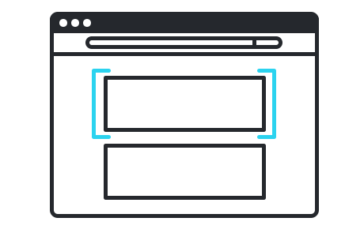
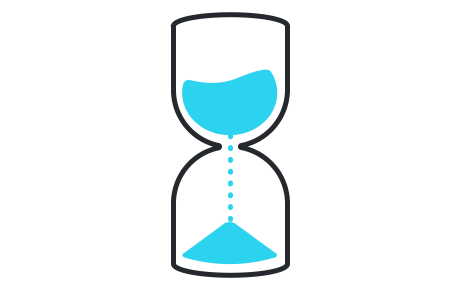
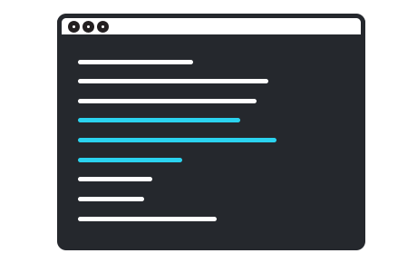
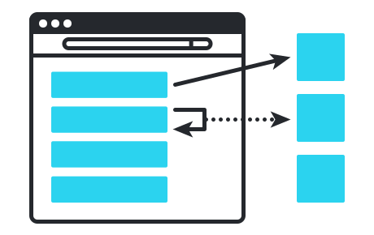

Features

Smart selectors
Taiko’s API treats the browser like a black box. Write test scripts by looking at a web page without inspecting it’s source code.

Implicit waits
Taiko’s API understands XHR requests, dynamic content and implicitly waits for elements to load on the page before moving on to next action.

Interactive recorder
Record and write maintainable test scripts within seconds using Taiko's unique recorder which is a REPL to automate the browser.

Request & response stubbing
Mock and stub requests from the browser with
Taiko's intercept API that makes managing test environments and data
simpler.